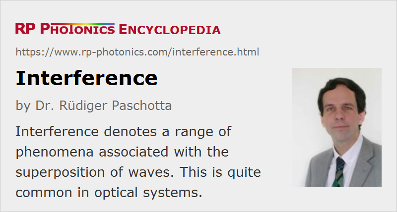

Interference
Definition: a range of phenomena associated with the superposition of waves
German: Interferenz
Categories: general optics, physical foundations
How to cite the article; suggest additional literature
Author: Dr. Rüdiger Paschotta
Interference is an optical effect which can occur when two or more light beams are superimposed. More precisely, for interference to occur, several conditions have to be met:
- spatial and temporal overlap of the two light fields
- phase coherence of the two light fields
- non-orthogonal polarization states
In this case, the resulting total light field does not have an optical intensity which equals the sum of the intensities of the superimposed beams. Instead, its complex amplitude is the sum of the amplitudes of the superimposed beams. For example, the amplitudes of two equally intense light beams can have opposite signs at some location, so that they can cancel each other (destructive interference). On the other hand, with equal signs (equal phases) of both contributions (constructive interference), the total intensity can be four times that of the single beams. Nevertheless, the total energy is conserved in any case. For example, if two light beams of equal intensity, frequency and polarization are superimposed on a screen with some angle between the beams, an interference pattern occurs which consists of bright and dark stripes (see Figure 1). It is called a standing wave pattern, since the minima and maxima of the total optical intensity can stay at their positions, although the optical waves are moving with high velocity.
Figure 2 illustrates the superposition of two circular waves with the same frequency but different source points. It shows a snapshot, i.e. the field distribution at one particular moment in time. As time progresses, the spatial patterns move away from the point sources.
By averaging the optical intensity corresponding to this pattern over one oscillating period, the interference pattern in Figure 3 is obtained.
Interference effects also occur in multimode fibers. Figure 4 shows the simulated output intensity profiles of a multimode fiber when an input beam is scanned across its input face.

Importance of Interference Effects
The phenomenon of interference is of great importance in optics in general, and also in laser physics. Some examples:
- Interference governs the operation of interferometers, which are used in many variations for a wide range of applications, and is the basis of holography.
- Interference is essential for the formation of resonator modes, and thus for many physical details of laser operation.
- Interference is essentially involved in the effect of spatial hole burning.
- Interference is the basis of detecting beat notes in optical metrology.
Questions and Comments from Users
Here you can submit questions and comments. As far as they get accepted by the author, they will appear above this paragraph together with the author’s answer. The author will decide on acceptance based on certain criteria. Essentially, the issue must be of sufficiently broad interest.
Please do not enter personal data here; we would otherwise delete it soon. (See also our privacy declaration.) If you wish to receive personal feedback or consultancy from the author, please contact him e.g. via e-mail.
By submitting the information, you give your consent to the potential publication of your inputs on our website according to our rules. (If you later retract your consent, we will delete those inputs.) As your inputs are first reviewed by the author, they may be published with some delay.
See also: interferometers, optics, optical phase, coherence, holography, beat note, The Photonics Spotlight 2007-09-27, The Photonics Spotlight 2009-05-22
and other articles in the categories general optics, physical foundations
|  |
If you like this page, please share the link with your friends and colleagues, e.g. via social media:
These sharing buttons are implemented in a privacy-friendly way!